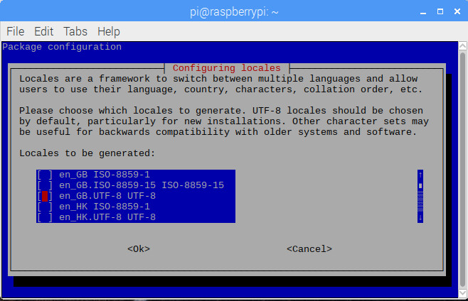
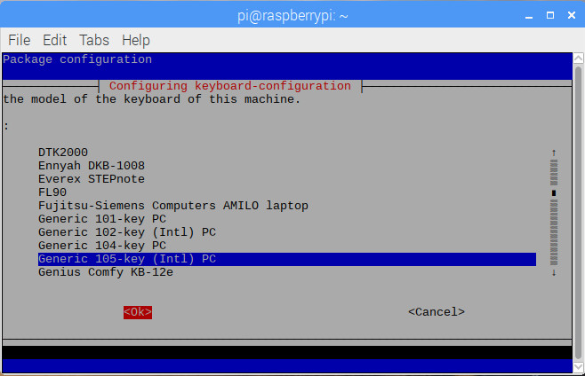
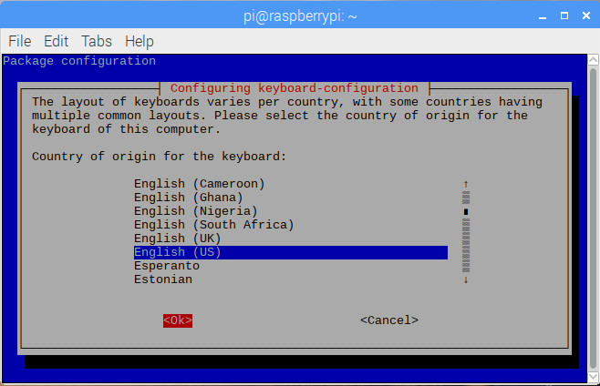
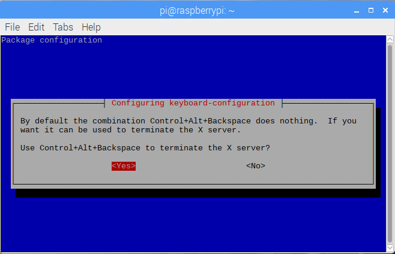

1.4 Raspberry Pi Configuration
1.4.1 raspi-config
raspi-config is the Raspberry Pi configuration tool specifically for the Raspberry Pi. Command
sudo raspi-config
will pop up the following configuration page:

There are 9 items in total, and four of them, are to be configured:
- 4 Localisation Options: Set up language and regional settings
- 5 Interfacing Options: Configure connections to periphery devices
- 7 Advanced Options: Configure advanced settings
- 8 Update: Update this tool to the latest vesion firmware
1.4.2 Localisation Configuration
After having selected 4 Localisation Options, you will be able to see the following page:

From NOW on, we are going to change Locale, Timezone, Keyboard Layout, as well as Wi-fi Country one by one.
- Locales
en_GB.UTF-8 UTF-8 is enabled as the default locales settings:

Since the author is at Vancouver, Canada, North America, while writing Raspberry Pi Full Stack, we need to make sure en_US.UTF-8 UTF-8 is enabled, to take the place of en_GB.UTF-8 UTF-8, which is supposed to be ticked OFF instead.

After selecting OK, the following page is popped up:

Then, press OK again, and we fill finish the system locale settings.
- TimeZone
Users should set their own TimeZone. In our case, America and Vancouver are respectively seletect as the Geographic area and Time zone, as follows:


Then, press OK again, and we will finish the system timezone settings.
- Keyboard Layout
A correct Keyboard Layout also needs to be correctly configured. Specifically for the author's keyboard, five selections are respectively chosen as:





Then, press OK again, and we fill finish the system keyboard layout settings.
- Wi-fi Country
Afterwards, users are expected to select their own wi-fi country. Here, Canada is selected as the author's wi-fi country.

Then, press OK again, and we fill finish the wi-fi country settings.
1.4.3 Interface Configuration
Users can enable their needed interfaces after selecting 5 Interfacing Options. Here on our courses, students are encouraged to enable ALL 8 interfaces listed as follows:

1.4.4 Advanced Settings
By selecting 7 Advanced Options, the following page is shown.

A1 Expand Filesystem is just exactly what has happened during FIRST booting, in order to make full use of all SD/TF storage. By selecting A1 Expand Filesystem, you will see the following page.

1.4.5 Firmware Updating
8 Update is used to update the tool raspi-config.
Now, rebooting the system. In the next section, Internet is going to be enabled.